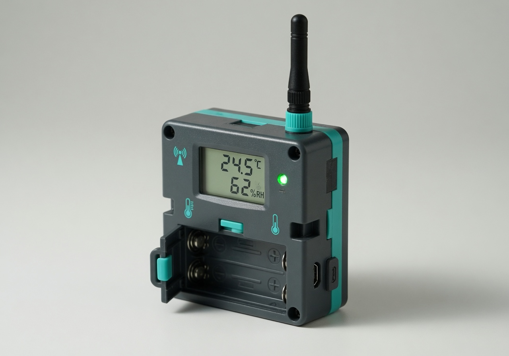
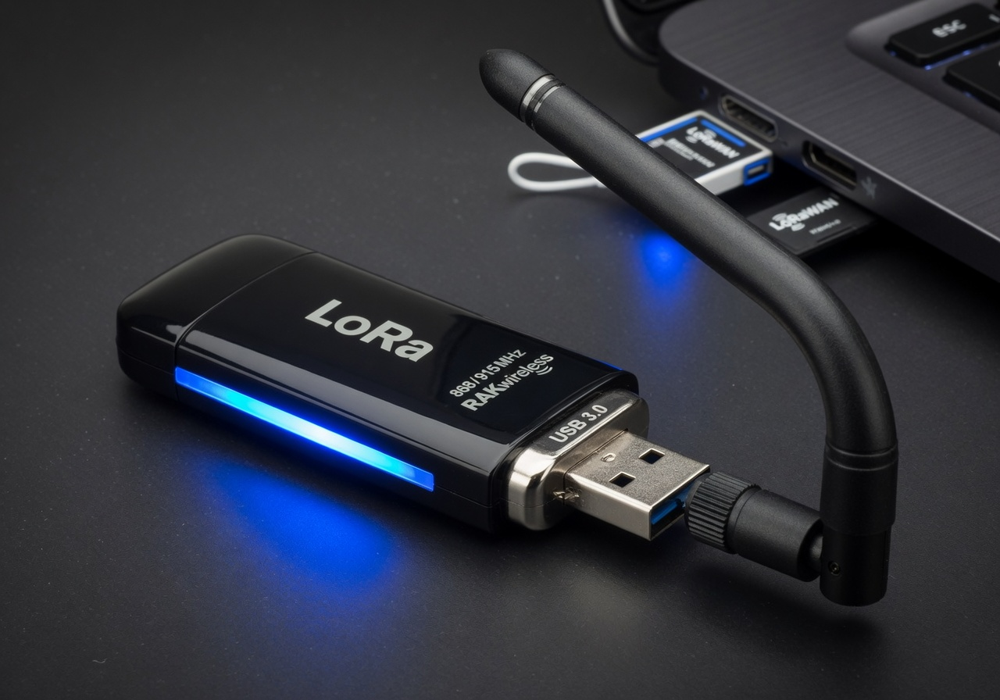
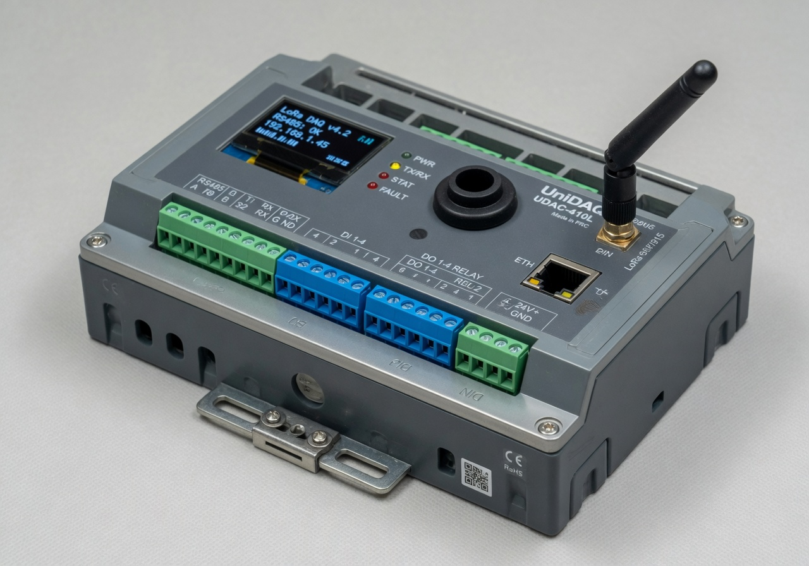
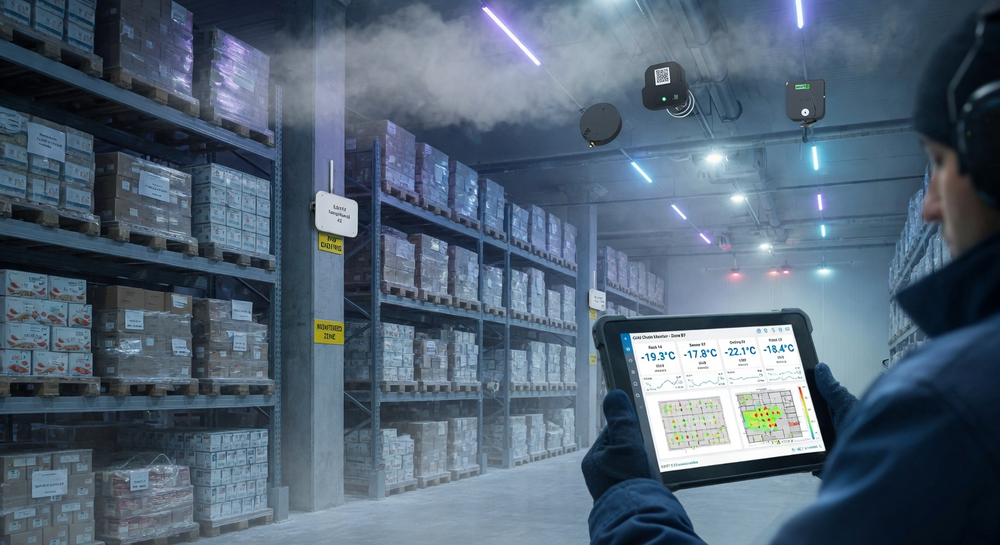

普通 WiFi 方案
现场没网、距离远、穿墙能力弱，容易掉线。后期配网、断线维护成本高，户外/地下室几乎不可用。
对比常见方案
现场没网、距离远、穿墙能力弱，容易掉线。后期配网、断线维护成本高，户外/地下室几乎不可用。
需要插卡、长期支付流量费，设备多了以后成本爆炸。小项目或长期部署不划算，信号也受基站影响。
采集端与接收端直连，远距离、低功耗、抗干扰。适合多点、仓库、冷库、大棚等场景，一次投入长期使用。
PRODUCTS

适合仓库、机房、冷库、大棚、养殖场等环境监测。定时上报，接收端实时查看或导出历史。

插电脑即可接收多个采集端数据。可直接用串口工具查看，或我们提供上位机软件实时显示、记录、导出 CSV。

支持 RS485 / RS232 / DI / DO / 以太网等多种接口，适合工业设备、PLC、传感器、报警器、土壤墒情仪等接入 LoRa 网络。
SCENES

CUSTOM DEVELOPMENT
告诉我距离多远、需要几个点、测什么参数（温湿度 / 土壤 / 电压 / 电流 / 门磁 / 烟感…）、供电方式、是否要上位机 / PLC / 485 设备对接。我会给出最省钱可靠的完整方案，而不是让你买回去自己摸索。
外壳尺寸与材质、传感器类型与精度、接口组合（RS485/RS232/DI/DO/以太网/模拟量）、采样与上报频率、报警阈值与联动逻辑、配套上位机界面、网关 / 中继 / 节点任意组合、协议定制（Modbus / 私有）。
BUY CHANNELS
标准产品支持现货快速发货。批量或定制方案请通过下方邮箱 / 闲鱼留言详细沟通，我会给出专属报价。
CONTACT & CUSTOM
把你的使用场景告诉我：距离、点位数量、测什么数据、供电方式、是否接电脑/PLC。我会快速给你最合适的推荐和报价。
工作日 24 小时内回复。支持全国发货 + 远程技术指导。